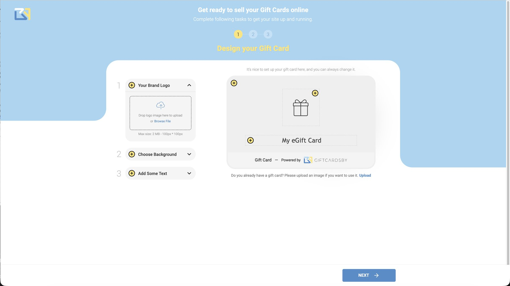

One gap, felt differently by four parties
I want to be precise about how we understood this problem, because it is the part a reader is most entitled to challenge. There was no formal research program. No interviews, no usability studies, no diary work, nothing of that kind is on record for this project, and I am not going to describe it as if there were.
What we did have was three real sources of evidence, and the framing below came out of them.
What this means for the reader: the four-party framing below is product framing, not research findings. It is a defensible reading of a market and a platform, argued from the three sources above. It is not evidence of what any individual merchant said or did.
Business
Merit's technology was built for enterprise and customized programs, which locked out a large, fragmented base of smaller merchants. Growth needed a product that scaled without a bespoke build per customer, because a custom program cannot be sold to a cafe at a cafe's price.
Merchant
Small businesses wanted branded gift cards but had no budget, no engineering and no operations to build a system. They needed to launch without commissioning software or managing card codes by hand, and without taking on a support obligation they could not staff.
Purchaser
People wanted to gift from someone's favorite local spot, but small brands rarely offered digital gifting at all. The alternatives were generic, or limited to big retail chains, which is the opposite of what makes a gift feel personal.
Product
All of that enterprise complexity, issuance, payments, redemption and reporting, had to become a guided experience a non-specialist could actually finish alone. That is the constraint that turned a business decision into a design problem.
The four are not four separate briefs. They are one gap seen from four positions, and a fix that only answered one of them would have failed. Give the business a scalable product but leave the merchant a form they cannot complete, and nothing ships. Give the merchant a beautiful editor but leave the purchaser unclear on what the card is worth, and nothing sells.
The brief was not "add a gifting feature." It was to remove the infrastructure problem entirely, so a business could offer gift cards without becoming a technology company to do it.
The commercial case for that removal was not speculative. Gift cards behave well for the merchant who sells them, which is why the enterprise programs existed in the first place.
Those are the only two figures in this case study, they are industry figures rather than product results, and they are cited as such. Nothing on this page claims a GiftCardsby.com performance number, because none is mine to present.
Subtraction with one hard exception
The design stance was subtraction: identify the minimum set of decisions a merchant genuinely has to make to create a gift card that is trustworthy, sellable and redeemable, and let the platform absorb everything else. Stated like that, it sounds like a license to remove anything inconvenient. It is not, and the exception is what makes the rule usable.
Hide the infrastructure, never hide the terms of the deal. Value, validity, where a card works, redemption conditions and expiry are not infrastructure. They are the deal. A gift card is a promise between three people, the buyer, the recipient and the merchant, and each has to be able to act on it with confidence without asking anyone.
Every screen in the lifecycle was tested against two questions in that order. What can this person not have to think about? And what would they need to see in order to trust the result? When the answers collided, the second one won.
"The problem was not to reproduce every enterprise feature inside a smaller interface. It was to identify the minimum set of merchant decisions required to create a trustworthy, sellable, and redeemable gift card, and allow the platform to manage everything else behind the scenes."Design thesis · source-grounded
Simple was the hard part
Four tensions defined the real work. Each is a genuine design conflict, and each resolution had a cost. I have written the cost down as well as the stance, because a trade-off with no downside is usually a trade-off that was never made.
Simplicity versus transparency
Hiding the machinery is easy until you hide something a merchant or a customer needed. Value, validity, where a card works, redemption conditions and expiry all had to stay visible and legible through purchase and into redemption, even as everything operational disappeared from view. The recipient is the hardest case: that person never signs in to anything, so the terms have to travel with the gift itself.
The stance
Hide infrastructure, never hide the terms of the deal. Terms sit in the layout, not behind a link. On the storefront the validity line sits directly under the price. In the recipient email the value, the validity, the sender and the merchant's identity are all on the face of the message.
What it cost
Screens that would otherwise have been cleaner carry text that a purely minimal design would have removed. The buyer's purchase view has more written on it than a fashionable checkout would, and the recipient email is longer than a card image alone. That is a deliberate loss of visual quiet, taken to protect trust.
Freedom versus control
The market spans many cultures and occasions: Ramadan and Eid, Christmas and New Year, National Day, weddings, corporate thank-yous. Merchants needed real freedom to design for those moments, and a merchant who cannot make the card look like their brand will not sell it. But total freedom breaks issuance and management. If a merchant can move or remove the structural parts of the card, the platform can no longer reliably issue, price, track or redeem it.
The stance
Freedom on the surface, structure underneath. The merchant owns presentation completely: logo, artwork, background, text, color, occasion, message. The platform keeps the structured card object and the fixed footer strip. Those are not styling options, so they are not offered as ones.
What it cost
A merchant cannot design a card that is entirely their own. The "powered by GiftCardsby" strip stays, and the card keeps a recognizable shape. For a brand-sensitive business that is a real concession, and it is the price of not running your own issuance stack.
Designing a card versus running a program
Making an attractive card and operating a gift-card program are related but different jobs, and merchants conflate them at their own expense. A first-time merchant wants to make one card and see it live. The same merchant, three months later, wants to know what sold, what is still outstanding, and what expires next month. Those are different needs, at different moments, with different frequencies.
The stance
Keep them structurally separate. Card content lives in the creator. Everything commercial and operational, published cards, activity, settings, lifecycle status, lives in the workspace around it. The creator is a task you finish; the workspace is a place you return to.
What it cost
Two surfaces to learn instead of one, and a merchant who wants to change a commercial term has to leave the design context to do it. I accepted that navigation cost because merging them would have put operations in front of a first-time merchant who does not need them yet.
Occasion-led merchandising
This is the tension that is easiest to miss and most expensive to get wrong. Seasonal and community moments arrive fast and often, and their commercial value is concentrated in a short window. Eid, National Day, a wedding season, a holiday: if launching a new occasion design meant reconfiguring the program, the merchant would miss the window that actually matters, and the product would be judged on the one week it was too slow.
So the unit of change had to be the design, not the program. Adding an occasion had to be an act of merchandising, something a merchant does in minutes on a Tuesday, rather than a setup task with commercial consequences attached.
The stance
New cards are cheap to create: add a design, reuse the structure. Occasion is a design choice inside the creator, presented as a row of options with ready-made artwork, and never a program setting. A merchant who has published once can respond to the next occasion without touching anything commercial.
What it cost
Because occasion is content rather than configuration, the product does not treat a seasonal push as a first-class object. There is no campaign concept, no scheduling, no seasonal reporting view. A merchant gets speed, and gives up the structure that a marketing team might later want.

- Occasion as content. Chips sit inside the personalize step, next to artwork and message, and not in settings.
- Ready-made designs. A merchant with no design resource still gets a credible seasonal card, which is the difference between responding to Eid and skipping it.
- Preview on the right. The merchant sees the recipient's view while choosing, so the occasion is judged as the gift, not as an option in a list.
Hide the infrastructure, never the terms of the deal. A gift card is a promise between three people, and each has to be able to act on it with confidence.
Sign up, design, publish, sell, redeem
Five steps for the merchant, and a full commercial system underneath them. This section walks the whole path, including the parts a merchant never configures and the one screen I do not hold a publishable recreation of.

A door, not a project
A merchant creates an account with an email and the essential business details, then verifies by email to activate. The sequence matters more than the fields. Only the email is genuinely required to open an account. Tax identifiers, the billing address and card details surface later, when the merchant is ready to transact, so the first screen never reads like an enterprise setup form.
The billing address form is the longest single form in the product, and it is placed deliberately late. Asking for it before a merchant has seen anything of value is how self-serve products lose people who were genuinely interested. Asking for it after they have committed is ordinary.


- Progressive disclosure, in commitment order. Identity, then address, then payment. Each step asks for more only after the merchant has invested more.
- Verification before value, not before interest. Email verification activates the account. It is a real gate, but it sits after the merchant has already decided to try, not in front of the decision.
- No enterprise vocabulary. Nothing in sign-up mentions issuance, settlement or program configuration, because none of it is a merchant decision.
The operating home of a live program
After activation the merchant lands in a workspace designed as the operating home of their gifting program rather than a gallery of saved designs. From here a merchant creates a card, edits drafts, reviews what is published, watches activity and reaches settings. It is the surface that answers the questions a merchant has on day thirty, not day one: what is live, what sold, what still needs attention.
Structurally, the workspace is the other half of tension 3. Everything commercial and operational belongs here, which is precisely what allows the card creator to stay a single, finishable task. The workspace is also where lifecycle status is legible, so a merchant can see the state of a card without asking anyone or opening a report.
This section has no screenshot. The workspace is the one screen in the journey I do not hold a publishable recreation of, so it is described here from the design intent and the structure it had to serve. I would rather say that once, in plain language, than imply an image is coming.
Three real decisions, and a live answer
This is the screen the whole product rests on, and the one place the subtraction thesis has to hold. A non-specialist has to build a sellable, branded card without ever meeting issuance, payments or redemption. Card creation is therefore organized around three kinds of decision and nothing else, with a live preview beside them.
Brand
Logo, identity, artwork, styling. The merchant owns presentation completely, because presentation is the part a merchant is genuinely expert in.
Commercial
Value and denominations, currency, validity and expiry, where and on what the card applies. Few decisions, but each one is a term of the deal.
Customer-facing
Card name, occasion, message, recipient information, redemption instructions. Everything the buyer and the recipient will read.

- Left rail as a task list. Logo, then background, then text. Ordered, short, and closed. A merchant can see the end of the task from the start of it.
- Preview as the answer, not a step. The right side resolves "what will my customer actually receive?" continuously, which is why there is no separate preview stage at the end.
- Constraint made visible early. The footer strip and card structure are present before the merchant has added anything, so nothing is taken away later.


The merchant also builds the page customers buy from
A card on its own is not a business. The third setup step is a storefront builder: the merchant's own branded page, assembled from a logo, a main banner, a welcome line and a brand color, with a live device preview beside it. It is the same subtraction rule applied to a second surface. A merchant gets a sellable web page without a web project, and the platform keeps the checkout, currency handling and delivery options it needs in order to transact.
What is absent from this screen is the argument. There is no template gallery, no page structure to configure, no hosting decision, no payment setup, no domain step. Those are all real jobs, and all of them are the platform's.

The buyer's view of the same card
The published storefront is where the purchaser, the third party in the promise, finally appears. The buyer chooses the design and the occasion, the currency and denomination, the quantity, and whether the card is a gift to someone else or a purchase for themselves. Then they pay, and the platform takes over.
This is the screen where tension 1 is most visible. The validity line sits directly beneath the price rather than inside a terms link, because a buyer deciding how much to spend is exactly the person who needs to know how long the card lasts. Putting it one click away would have made the page cleaner and the purchase worse.

- Terms in the layout. Validity under the price, not behind a link. The transparency half of the thesis, expressed as position on a page.
- Gift or self, asked plainly. The two purchase intents are genuinely different journeys after checkout, so the choice is made explicitly rather than inferred.
- The merchant's brand, not the platform's. The buyer is on the merchant's page. The platform's presence is limited to what has to be there.
The one party who never signs in
The recipient is the hardest user in this system and the least considered in most gifting products. That person did not choose the merchant, did not choose the platform, has no account, and will make a judgment about all three from one email. So the value, the validity, the sender's message and the merchant's identity all have to travel with the gift.
The buyer sees this exact preview before paying. That is not a nicety, it is how the promise stays a single shared object: the buyer confirms what will arrive, the recipient receives what was confirmed, and the merchant redeems the same card. One card object, previewable by everyone who has a stake in it.

- Trust signals held visible. "One year from the date of issue" is written out, not implied by a date the recipient has to interpret.
- The sender stays present. A gift is from a person. The message is treated as content, not as an optional field appended to a receipt.
- Previewable by the buyer. The same preview appears during purchase, which removes the commonest anxiety in digital gifting: not knowing what the other person will see.
Where the promise gets kept
Redemption is the moment the whole system is judged, and it happens in a shop, at a counter, in front of a customer. The platform holds the code and the transaction state; the merchant validates redemption through the supported flow. Deliberately, none of the mechanics of that are a merchant configuration decision: redemption rules, code security and status changes are platform jobs, because getting them wrong is a commercial failure rather than a preference.
What the merchant does need is visibility. Created, published, purchased, delivered, redeemed, expired or cancelled: the states of a card, legible at a glance, so a merchant has the oversight a real program needs without the operational weight of running one.
A merchant does not want a report. They want to answer one question quickly: where is this card, and is anything waiting on me? Status was designed as an answer to that question rather than as a data table about it.
What was mine, and what was not
Productization projects make role inflation easy, because the product is the strategy and the strategy is the product. So here is the split in three columns, written to be checkable rather than flattering.
Design-led · mine
- Merchant onboarding: the field set, the step order, and the decision to defer everything except email.
- The merchant workspace as the operating home of a program, and its separation from the card creator.
- The card creator organized around three decision clusters, with a live preview rather than a preview step.
- The storefront builder: which brand controls a merchant gets, and the device preview beside them.
- The buyer's storefront experience, including terms placed in the layout rather than behind links.
- The recipient and redemption views, and the shared previewable card object across all three parties.
- Card-lifecycle visibility as a merchant-facing state model.
- The UX and UI system across all of the above: interaction patterns, hierarchy, components, copy structure.
Business and platform-led
- The decision to productize the enterprise capability at all.Public
- The commercial model: no setup cost, pay-as-you-go, payment on card sale.Public
- Multiple currencies, and support for physical and online stores.Public
- The underlying platform: issuance, payments, redemption, fulfillment, the merchant network.Public
- Consumer-behavior analytics as a launched capability.Public
- Engineering delivery, security, and operational support.Inference
Go-to-market-led
- Positioning across the full range, from small local businesses to global brands.Public
- The regional implementation with talabat, letting customers buy digital gift cards redeemable across talabat services.Public
- Launch timing, announcement and press coverage.Public
- Pricing communication and acquisition activity after launch.Inference
Stated in one sentence: I designed how it felt to use; Merit's product, engineering and business teams decided what it would be and how it would sell. I did not own the productization decision, the pricing, the platform, or the partnership. I did own every surface a merchant, a buyer or a recipient touches, and the reasoning about what each of them should never have to see.
One further honesty note on the workspace and lifecycle: I designed both, and I can describe the intent and the structure precisely. What I cannot state from the record is whether the MVP shipped the full lifecycle view or a subset of it. I have left that as an open question rather than resolving it in my own favor.
Verifiable: the product shipped, it is priced pay-as-you-go, it launched with a named regional partner, and it still runs on that model. Not shown here: adoption, revenue or usage for the product, because that data is not mine to present. Merit's later growth and institutional funding is company-wide context, not an MVP result, and the company's network figures describe its existing reach rather than anything this product produced. The honest claim is the design one.
An MVP is a set of refusals
GiftCardsby.com went live on 9 Aug 2022 as a self-service product for designing, creating, processing and distributing branded digital gift cards. What follows is what the launch carried, beside the things that were kept out on purpose.
Shipped at launch
- Self-serve merchant onboarding with email activation.
- A merchant workspace for creating, editing and reviewing cards, and for watching activity.
- The three-cluster card creator with a live preview.
- The storefront builder and a published, branded merchant storefront.
- Buyer purchase with currency, denomination, quantity, and gift or self delivery.
- Recipient delivery by email, and redemption at the merchant through the supported flow.
- Card-lifecycle visibility for the merchant.
- Commercially: no setup cost, pay-as-you-go, payment on card sale, multiple currencies, physical and online store support, consumer-behavior analytics.Public
- A regional implementation with talabat.Public
Deliberately left out
- Merchant-configurable operations. Redemption rules, code security, status handling and settlement stayed platform-side. Exposing them would have handed a small merchant a set of decisions with commercial consequences and no expertise to apply.
- An editable card structure. The structured card object and the footer strip were never made adjustable, which is tension 2 accepted rather than solved.
- Reporting inside the creator. No sales or performance data in the design surface. Operations live in the workspace, so a first-time merchant never wades through them.
- Campaign machinery for occasions. No scheduling, no seasonal campaign object, no occasion-level reporting. Occasion stayed content, which bought speed and gave up structure.
- Enterprise-style configuration. Approval workflows, custom program rules and bespoke integrations are the enterprise product's job, and reproducing any of them here would have rebuilt the problem the project existed to remove.
- Journey instrumentation. The merchant journey was not instrumented as part of the MVP design. That is the omission I would reverse first.
Does leaving this out stop a merchant reaching a live, sellable, trustworthy card? If not, it waited. Every item in the right-hand column passed that test, and the ones that did not, like validity and value, were never candidates for removal.
The three ownership bands are worth keeping separate one last time, because they answer three different questions and get conflated constantly.
"Productizing an enterprise system is less about what you build into the interface than about what you keep out of it, while never removing the few things a person needs to trust the result."The discipline I kept